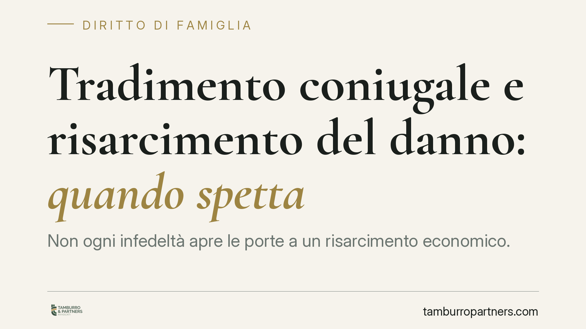
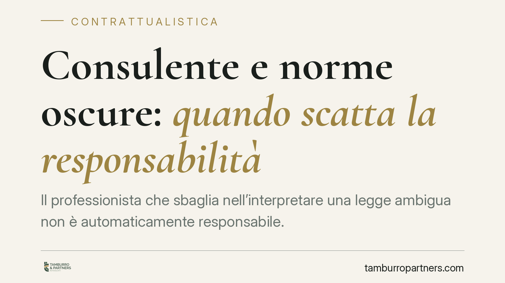
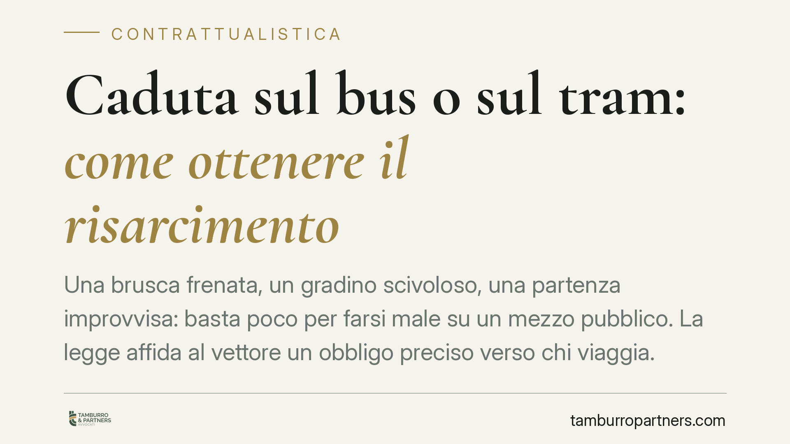
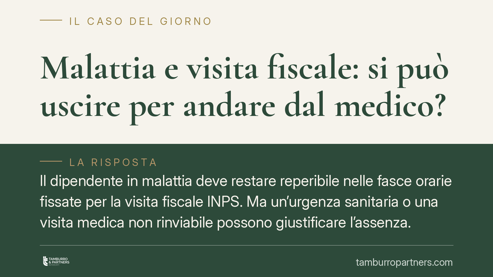
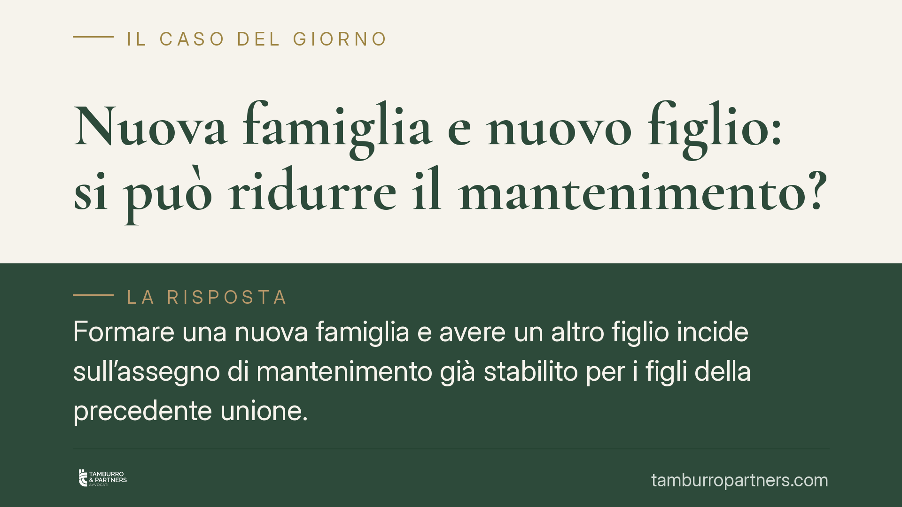
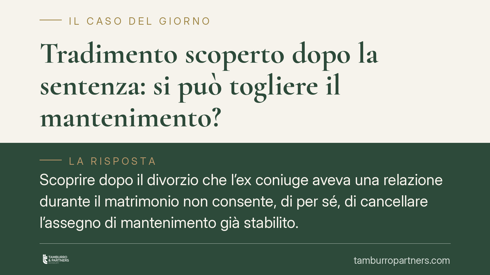
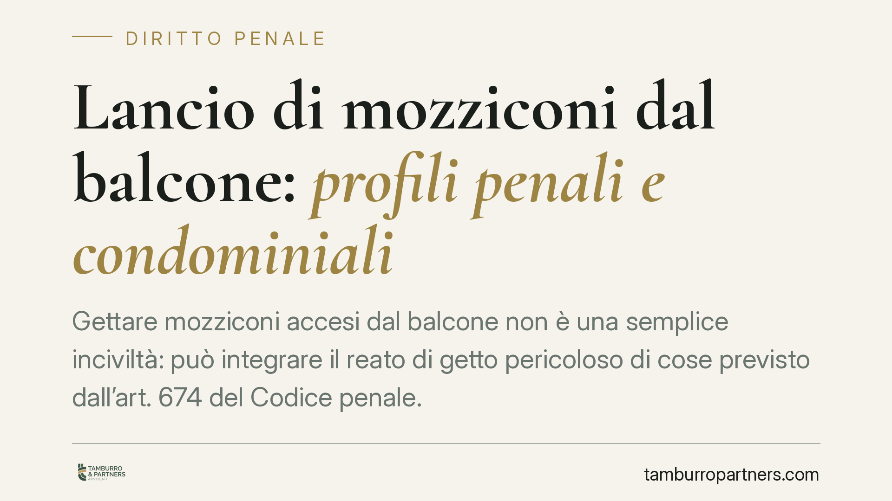
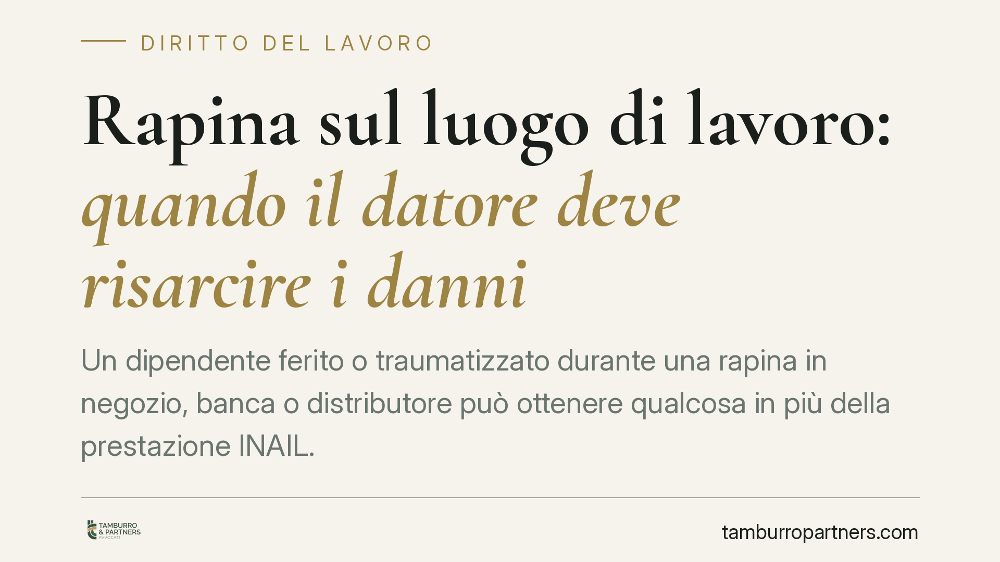
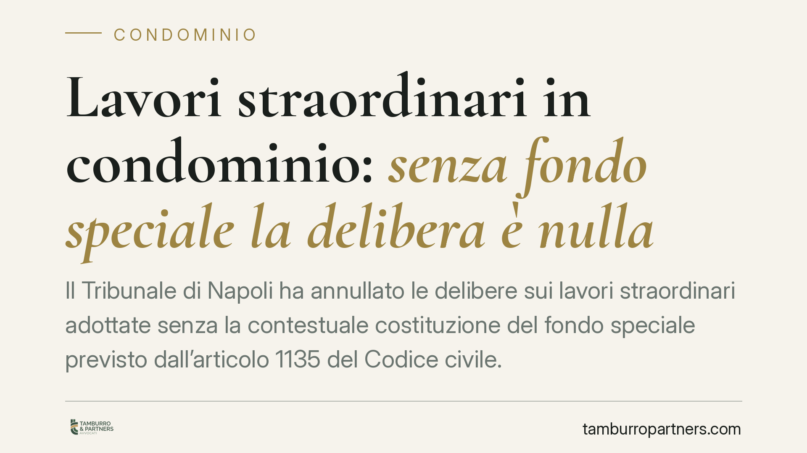

Tradimento coniugale e risarcimento del danno: quando spetta
Non ogni infedeltà apre le porte a un risarcimento economico. La Cassazione ha precisato che il tradimento coniugale genera responsabilità solo quando lede diritti fondamentali del…
Infortunio sul lavoro: quando il datore non risponde
La responsabilità del datore di lavoro per gli infortuni non è automatica. Il Testo Unico sulla sicurezza e la giurisprudenza della Cassazione tracciano confini precisi: esistono s…

Consulente e norme oscure: quando scatta la responsabilità
Il professionista che sbaglia nell'interpretare una legge ambigua non è automaticamente responsabile. L'articolo 2236 del codice civile e la giurisprudenza della Cassazione circosc…
Decreto PA 2026: cosa attendersi su ferie, graduatorie e caporalato
Circolano anticipazioni su un cosiddetto Decreto PA 2026 che interverrebbe su ferie, validità delle graduatorie, scuola e contrasto al caporalato. Alla data di redazione l'articola…

Caduta sul bus o sul tram: come ottenere il risarcimento
Una brusca frenata, un gradino scivoloso, una partenza improvvisa: basta poco per farsi male su un mezzo pubblico. La legge affida al vettore un obbligo preciso verso chi viaggia. …

Malattia e visita fiscale: si può uscire per andare dal medico?
Il dipendente in malattia deve restare reperibile nelle fasce orarie fissate per la visita fiscale INPS. Ma un'urgenza sanitaria o una visita medica non rinviabile possono giustifi…

Nuova famiglia e nuovo figlio: si può ridurre il mantenimento?
Formare una nuova famiglia e avere un altro figlio incide sull'assegno di mantenimento già stabilito per i figli della precedente unione. La giurisprudenza esclude qualsiasi automa…
Diffamazione a mezzo social: quando un ente pubblico può querelare
Il Comune di Riccione ha querelato la Lega per diffamazione aggravata a causa di un video pubblicato su TikTok, chiedendo un risarcimento di un milione di euro. La vicenda riporta …

Tradimento scoperto dopo la sentenza: si può togliere il mantenimento?
Scoprire dopo il divorzio che l'ex coniuge aveva una relazione durante il matrimonio non consente, di per sé, di cancellare l'assegno di mantenimento già stabilito. La Cassazione h…
Risarcimento per la pausa pranzo negata: quando non è tassabile
Le somme corrisposte al lavoratore per la mancata fruizione della pausa non sono automaticamente reddito. La regola dell'art. 6, comma 2, del Tuir esclude dall'imponibile i risarci…

Lancio di mozziconi dal balcone: profili penali e condominiali
Gettare mozziconi accesi dal balcone non è una semplice inciviltà: può integrare il reato di getto pericoloso di cose previsto dall'art. 674 del Codice penale. La responsabilità è …

Rapina sul luogo di lavoro: quando il datore deve risarcire i danni
Un dipendente ferito o traumatizzato durante una rapina in negozio, banca o distributore può ottenere qualcosa in più della prestazione INAIL. A determinate condizioni il datore di…

Lavori straordinari in condominio: senza fondo speciale la delibera è nulla
Il Tribunale di Napoli ha annullato le delibere sui lavori straordinari adottate senza la contestuale costituzione del fondo speciale previsto dall'articolo 1135 del Codice civile.…

Sequestro della contabilità in nero: quali tutele per il contribuente
La Corte di Cassazione ha chiarito che la cosiddetta contabilità in nero può essere acquisita dagli organi di controllo senza le stesse garanzie previste per i registri obbligatori…

Welfare aziendale: il rimborso spese scolastiche è esente anche se paga il coniuge
Un chiarimento di prassi dell'Agenzia delle Entrate conferma che il rimborso delle spese scolastiche erogato dal datore di lavoro non perde l'esenzione fiscale se la fattura risult…

Guardia medica e obbligo di salire sull'ambulanza: profili penali
Il medico di continuità assistenziale che rifiuta di accompagnare l'ambulanza davanti a un'emergenza vitale può rispondere del reato di rifiuto di atti d'ufficio. La Cassazione ha …

Pene sostitutive e prognosi negativa: i criteri della Cassazione
Con una recente pronuncia la sesta sezione penale della Cassazione ha precisato i criteri con cui il giudice può negare le pene sostitutive formulando una prognosi negativa ex art.…

Furto di file aziendali: i tre reati del manager infedele
La Corte di Cassazione ha chiarito che il manager che sottrae file riservati dell'azienda per cui lavora può rispondere di tre reati distinti e concorrenti. Una pronuncia che alza …

Inquilino che non lascia casa: risarcimento e danni per il proprietario
Quando la locazione finisce, l'inquilino deve restituire l'immobile nello stato in cui l'ha ricevuto e alla data pattuita. Se il rilascio tarda o l'immobile è danneggiato, il propr…

Genitore intenzionale e coppie di fatto: le tutele riconosciute dalla giurisprudenza
Negli ultimi anni la giurisprudenza costituzionale e di legittimità ha ridisegnato i confini della genitorialità, ampliando le tutele per coppie di fatto, famiglie omogenitoriali e…

Durata del contratto di affitto e chi può firmarlo
Chi firma un contratto di affitto non deve per forza essere il proprietario, e la durata non è mai libera del tutto: la legge fissa limiti minimi e massimi e disciplina il rinnovo …

Deposito cauzionale nell'affitto: quando va restituito
Il deposito cauzionale è la somma che il conduttore versa al locatore a garanzia degli obblighi contrattuali. Alla fine della locazione deve essere restituito, salvo danni o morosi…

Assegnazione della casa familiare dopo la separazione: le regole
Dopo la separazione, chi resta nella casa familiare? La risposta non dipende da chi ne è proprietario, ma dall'interesse dei figli. L'assegnazione segue regole precise, oggi conten…

Sottotetto in mansarda abitabile: quando è possibile e a quali condizioni
Trasformare il sottotetto in mansarda abitabile è un'operazione frequente, ma non sempre lecita. La possibilità dipende dalla titolarità dello spazio, dal regolamento condominiale …

Il figlio adolescente può rifiutarsi di vedere il padre?
Sempre più spesso, dopo una separazione, un ragazzo dichiara di non voler più incontrare uno dei genitori. La domanda per chi vive questa situazione è netta: quel rifiuto ha valore…

Ricevere i soldi di una truffa online sulla propria carta: quando si rischia la condanna
Chi si vede accreditare sulla propria carta il denaro provento di una truffa online rischia una condanna anche senza aver partecipato al raggiro. Secondo la Cassazione (sent. n. 15…

Offese nel traffico: cosa si rischia dopo la depenalizzazione
Un insulto scagliato durante una lite al semaforo non porta più in tribunale penale. Dal 2016 l'ingiuria è depenalizzata: resta però un illecito civile che espone a sanzioni pecuni…

Omesso mantenimento: quando il mancato pagamento diventa reato
Non versare l'assegno di mantenimento non è solo un inadempimento civile: in molti casi integra un vero e proprio reato. La linea di confine passa dalla capacità economica reale de…

Strage di Capaci: la Cassazione e il concorso nel delitto di strage
A trent'anni dalla strage di Capaci, la Suprema Corte ha confermato le condanne, ribadendo alcuni capisaldi del diritto penale: la responsabilità concorsuale nel delitto di strage …

Donazioni e tutela degli eredi: come funziona davvero la restituzione degli immobili
Chi acquista un immobile che in passato è stato oggetto di donazione teme le pretese degli eredi del donante. Il tema è reale ma spesso rappresentato in modo distorto. Il Codice ci…